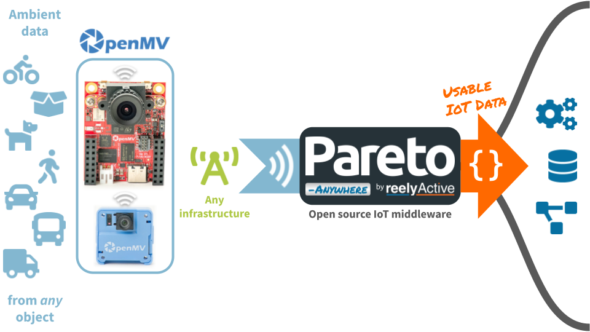
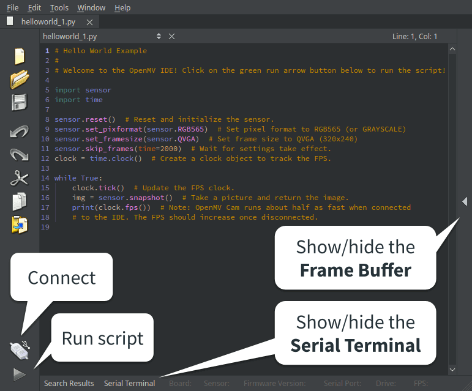
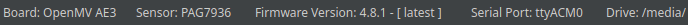
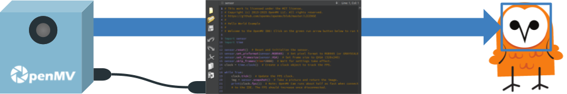
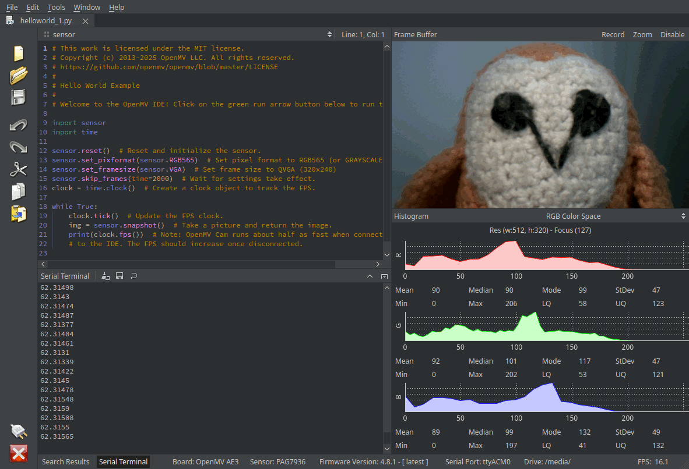
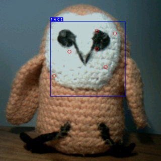
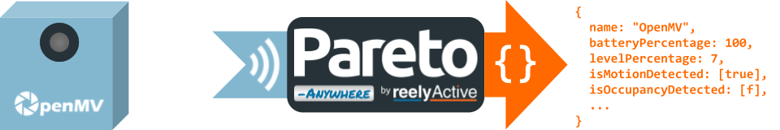
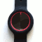

Develop wireless sensing applications with OpenMV cameras using Bluetooth Low Energy and Pareto Anywhere.

Learn how to wirelessly communicate machine vision and sensor data from OpenMV cameras.
An OpenMV camera & IDE and, optionally, a Pareto Anywhere instance to make sense of the data
Connect with the camera in the OpenMV IDE.
Your OpenMV camera will likely ship ready to connect to the OpenMV IDE.
If in doubt, consult the official documentation to ensure that any firmware updates are installed, and that the hardware (jumpers, antennas, ...) is correctly configured.
Choose a USB cable of sufficient length to allow the camera to be pointed at subjects of interest while tethered. Connect the camera first and then connect to your PC.
Your OS may mount the camera as a USB storage device.
| OpenMV N6 | USB-C |
|---|---|
| OpenMV AE3 | USB-C |
| OpenMV Cam RT1062 | USB-C |
| OpenMV Cam H7 | Micro-USB |
| Arduino Nicla Vision | Micro-USB |
Run the OpenMV IDE on your PC. The default view should resemble the following. Annotations have been added to highlight key features.

Click the Connect icon to connect to the camera via USB. The OpenMV IDE footer will display information about the device which is currently connected, in this case the OpenMV AE3 with the PAG7936 sensor.

The camera can now be programmed via the OpenMV IDE, which is the subject of the next step.
Run a Python script on the camera.

The OpenMV IDE should open a helloworld.py file by default. Click the Start (run script) icon at the bottom left of the IDE to run this script on the camera.

Observe the sensor snapshots updating live in the Frame Buffer and the frames per second calculations printed in the Serial Terminal.
Click the Stop (halt script) icon at the bottom left of the IDE to stop a running script.

Explore the extensive capabilities of the OpenMV camera by running the example scripts provided in the IDE. For instance, to test out the machine learning capabilities for face detection using TensorFlow, select the following:
File ➙ Examples ➙ Machine Learning ➙ TensorFlow ➙ blazeface_detector.py
Some examples are camera-specific and might not run on yours!
Relay machine vision and sensor data wirelessly.

The MicroPython bluetooth module includes a BLE class which provides a gap_advertise function to specify and transmit Bluetooth Low Energy advertising packets. The two key parameters of the gap_advertise function are:
* The Bluetooth Generic Access Profile (GAP) defines the advertising packet data structure.
The following Python script will advertise, every 0.5 seconds, OpenMV as the local name of the device.
import bluetooth, time
_ADV_PAYLOAD = [ 0x07, 0x09, ord('O'), ord('p'), ord('e'), ord('n'), ord('M'), ord('V') ]
ble = bluetooth.BLE()
ble.active(True)
ble.gap_advertise(500000, adv_data=bytearray(_ADV_PAYLOAD))
while(True):
time.clock().tick()
Copy Ctrl-C and paste Ctrl-V the code into a new file in the OpenMV IDE and then click the Start (run script) icon.
Observe in Pareto Anywhere, or from any Bluetooth Low Energy scanning mobile app, a device named OpenMV. This is the camera advertising its name to any devices in range.
Replace the _ADV_PAYLOAD from the script above with any of the examples below, in order to transmit different types of data.
# Battery Level # Advertising payload bytes: # 0: 0x04 = Length (not including the length byte itself) # 1: 0x16 = 16-bit service data (from GAP) # 2-3: 0x2a19 = Battery Level service UUID (from GATT)* # 4: 0x64 = Battery level as percentage (0x64 = 100%) batteryPercentage = 100 _ADV_PAYLOAD = [ 0x04, 0x16, 0x19, 0x2a, batteryPercentage ]
* Payload uses little endian byte ordering: least-significant byte (LSB) first.
# Generic Level (ex: gauge reader) # Advertising payload bytes: # 0: 0x05 = Length (not including the length byte itself) # 1: 0x16 = 16-bit service data (from GAP) # 2-3: 0x2af9 = Generic Level service UUID (from GATT)* # 4-5: 0x1234 = Generic level as unitless 16-bit value* levelMsb = 0x12 levelLsb = 0x34 _ADV_PAYLOAD = [ 0x05, 0x16, 0xf9, 0x2a, levelLsb, levelMsb ]
* Payload uses little endian byte ordering: least-significant byte (LSB) first.
# Distance (ex: ToF sensor) # Advertising payload bytes: # 0: 0x07 = Length (not including the length byte itself) # 1: 0x16 = 16-bit service data (from GAP) # 2-3: 0xfcd2 = BTHome service UUID* # 4: 0x40 = BTHome device information # 5: 0x40 = Distance (mm) Object ID # 6-7: 0x04d2 = Distance measurement (1234mm)* distanceMsb = 0x04 distanceLsb = 0xd2 _ADV_PAYLOAD = [ 0x07, 0x16, 0xd2, 0xfc, 0x40, 0x40, distanceLsb, distanceMsb ]
* Payload uses little endian byte ordering: least-significant byte (LSB) first.
# Motion + Occupancy # Advertising payload bytes: # 0: 0x08 = Length (not including the length byte itself) # 1: 0x16 = 16-bit service data (from GAP) # 2-3: 0xfcd2 = BTHome service UUID* # 4: 0x40 = BTHome device information # 5: 0x21 = Motion Object ID # 6: 0x01 = Motion detected (1 = true) # 7: 0x23 = Occupancy Object ID # 8: 0x00 = Occupancy not detected (0 = false) isMotionDetected = 1 isOccupancyDetected = 0 _ADV_PAYLOAD = [ 0x08, 0x16, 0xd2, 0xfc, 0x40, 0x21, isMotionDetected, 0x23, isOccupancyDetected ]
* Payload uses little endian byte ordering: least-significant byte (LSB) first.
Consult our best practices guide for more details and examples:
The MicroPython network module includes a WLAN class which facilitates connection to a WiFi network. The MicroPython requests module facilitates making HTTP requests, such as POSTing images as multipart/form-data.
The following Python scripts will connect the camera to a WiFi network, and capture an image in JPEG format in the camera's memory to POST to the /record-silo of a Pareto Anywhere instance.
import network
import time
SSID = "WiFi Network Name"
KEY = "WiFi Network Password"
wlan = network.WLAN(network.STA_IF)
wlan.active(True)
wlan.connect(SSID, KEY)
while not wlan.isconnected():
time.sleep_ms(1000)
print("WiFi Connected:", wlan.ifconfig())
import image
import requests
import csi
URL = ".../records/device/{id}/{type}"
csi0 = csi.CSI()
csi0.reset()
csi0.pixformat(csi.RGB565)
csi0.framesize(csi.QVGA)
csi0.snapshot(time=2000)
stream = image.ImageIO((320, 240, csi.RGB565), 1)
stream.write(csi0.snapshot().compress())
stream.seek(0)
files = { 'record': ('image.jpg', stream, 'image/jpeg') }
r = requests.post(URL, files=files)
print("POST status:", r.status_code, r.reason)
Edit the bold fields in the above code as required. When using Pareto Anywhere, the URL combines the following elements:
* can be obtained using BLE.config()
Tutorial prepared with ♥ by jeffyactive.
You can reelyActive's open source efforts directly by contributing code & docs, collectively by sharing across your network, and commercially through our packages. We invite you to become a sponsor to OpenMV to their work too!Continue exploring our open architecture and all its applications.
